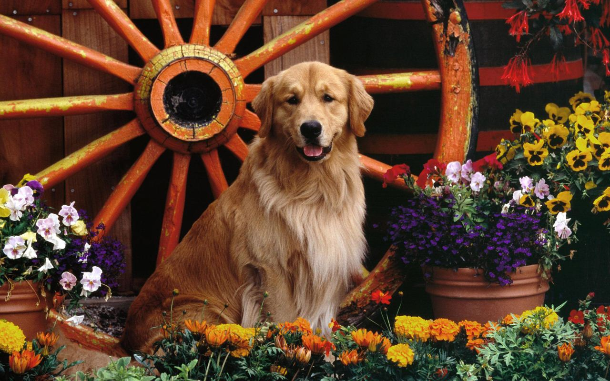
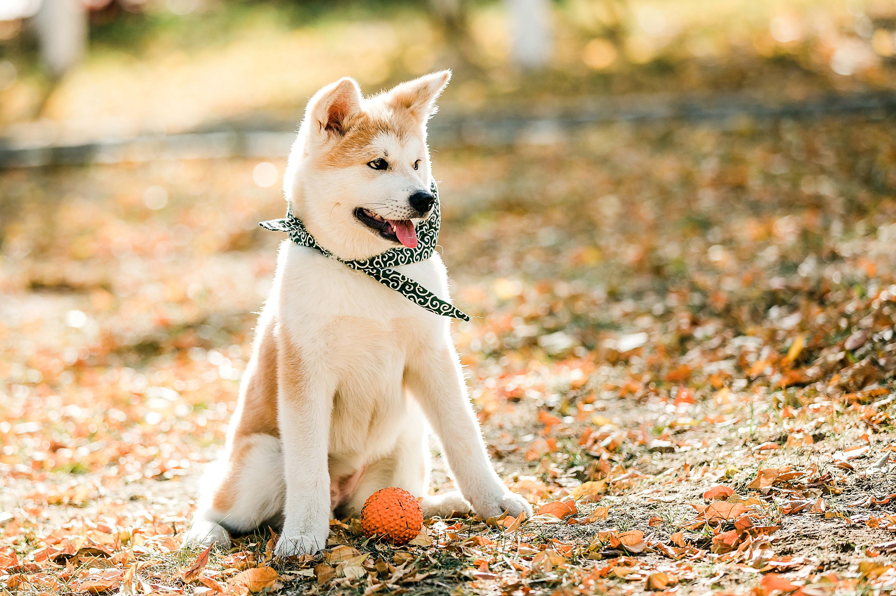
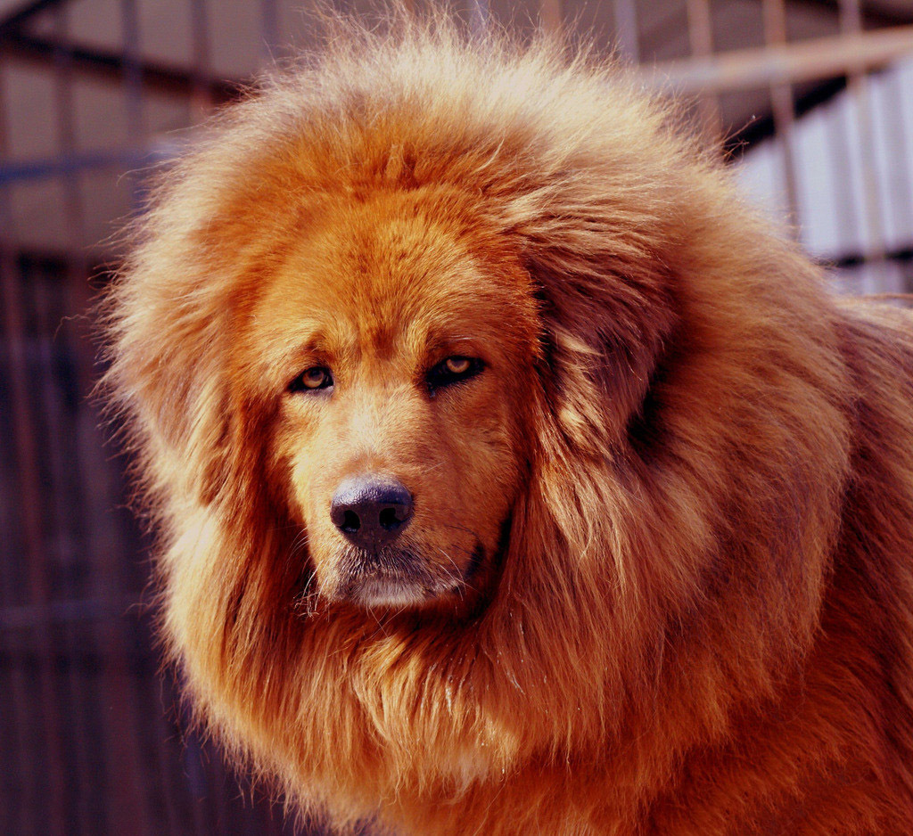
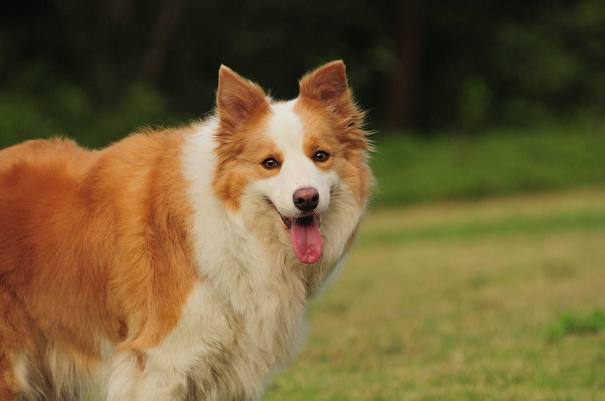
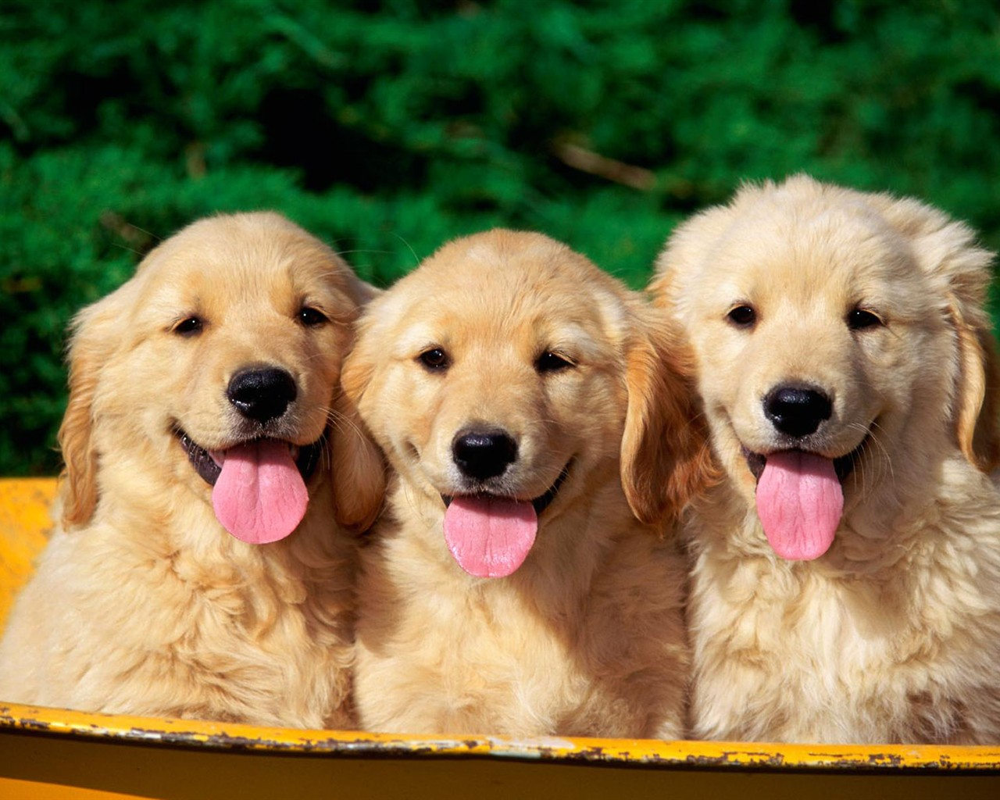
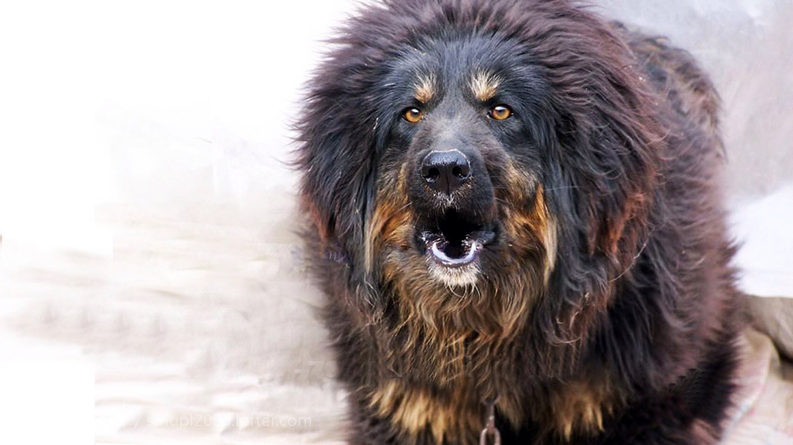
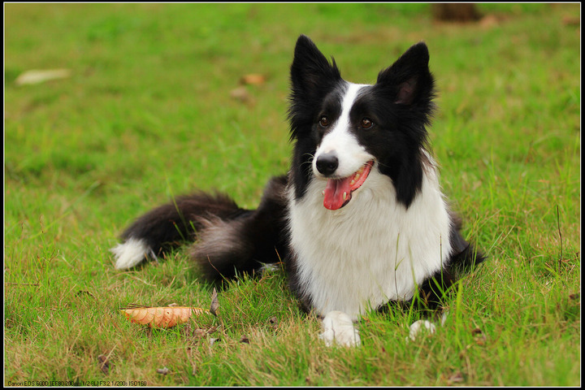
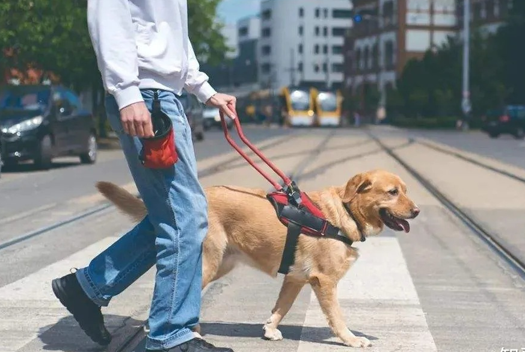
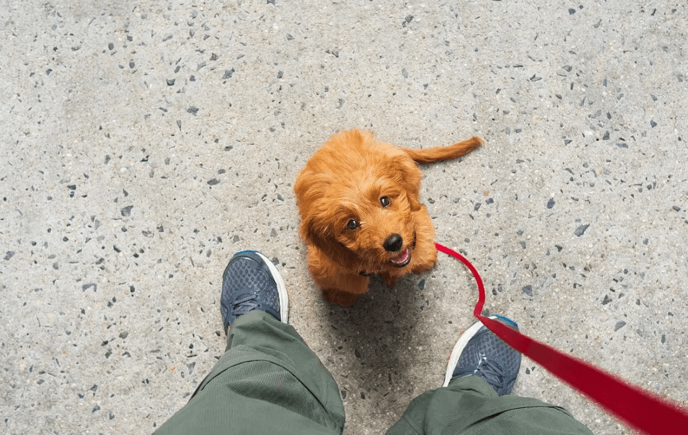
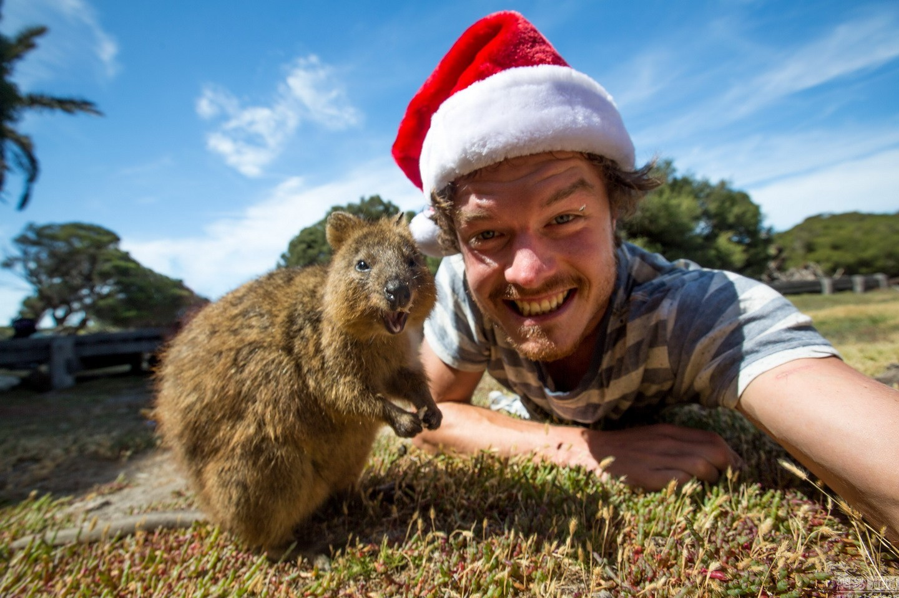

狗狗对于人类的贡献无处不在
狗不会耻笑同类或异类，并且善于包容和同情。——（台湾）杜白
《忠犬八公的故事》《一条狗的使命》
第1位: Border Collie(边境牧羊犬) 第2位：Poodle(贵宾犬) 第3位: German Shepherd(德国牧羊犬)
2015年11月18日报道，法国巴黎，一条反恐警犬在警方对恐怖分子的围捕行动中被打死。据报道，RAID中枪后知道即将身亡，跑回主人身边，在主人脚边闭上了眼睛。
1.狗狗的耳朵由18块肌肉控制，而两只耳朵可以独立做不同动作，堪比眉毛舞的耳朵舞。 2.狗狗的始祖是貌如小黄鼠狼、生活在四千万年前的细齿兽。
1.初次养狗的朋友建议养小型犬，比较可爱也好驾驭 2.建议尽量进口狗粮优先，品质营养都会好很多






狗狗在现实生活的各个方面发挥着不同的重要作用

可以带领盲人安全地走路，当遇到障碍和需要拐弯时，会引导主人停下以免发生危险。
军犬是一种具有高度神经活动功能的狗，它对气味的辨划能力比人高出几万倍，听力是人的16倍，视野广阔，有弱光能力，善于夜间观察事物。
犬对气味的辨别能力比人高出百万倍，听力是人的18倍，视野广阔，有在光线微弱条件下视物的能力，是国际上普遍认为搜救效果最好的“设备”。
经过专门训练，能够服从缉毒犬训导员的指令，能够在各种不同场所对不同的行李物品进行查缉，从中发现隐藏有毒品的物件的专用犬
狗狗与人相处为伴或经训练以后，会对主人怀有深厚的感情，对主人顺从，忠诚，能按主人的意图行事;狗狗可以陪主人玩，听主人说话，排忧解闷

随着生活的进步，养狗的人越来越多，平时出门在外，见到的大部分都是遛狗的人，而遛狗的人就算素不相识，他们也能成为朋友，所以养一只狗，能让自己广交好友。
许多小动物和狗狗一样都是人类的好朋友，我们要真正地把它们当做自己的朋友，好好保护它们
